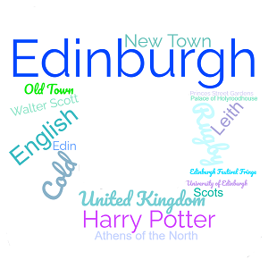

Introdução
Capital da Escócia
- A página da Introdução inclui uma breve Introdução da cidade.
- A página da Localização inclui a localização da cidade, assim como algumas informações
geograficas destas e um mapa da Cidade.
- A página da Multimedia inclui um video acerca da cidade.
- A página da Informação inclui os dados e as informações da cidade.
